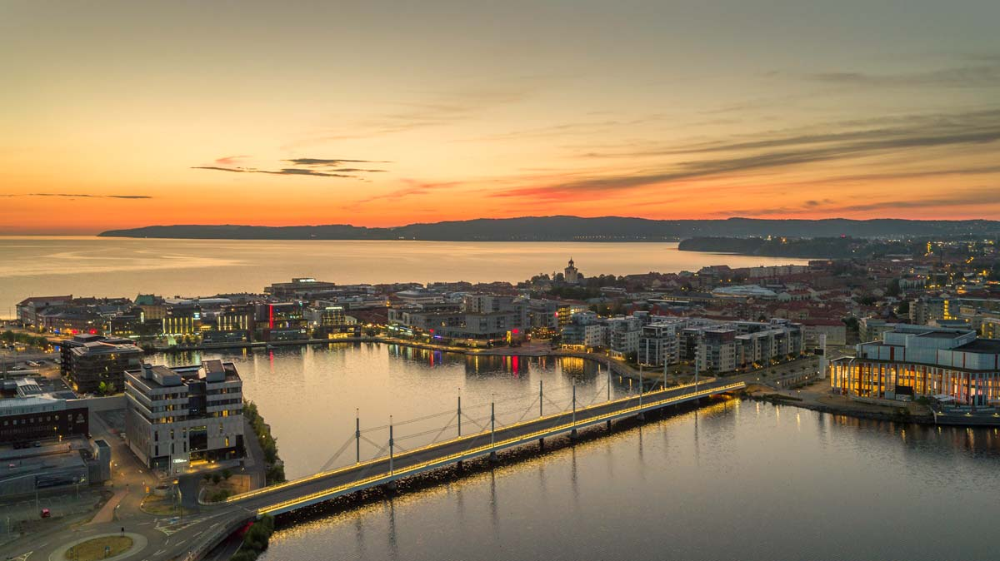

What can you do here?
Jönköping is a new city for me, but one I have heard many good things about. Moving here in October, I decided to immediately put in effort to get to know the ins and outs of Jönköping, my new home for the next three years.
- Visit City Park or Rosenlunds Rosarium
- Shopping
- Walk the Vättern lakeside
- Watch a variation of sports
I have visited both the Jönköping City Park and Rosenlunds Rosarium since I very much enjoy nature, plants and the stillness it brings
to an otherwise rumbling city. Look at the beautiful flowers at the Rosenlunds Rosarium, especially during late spring to late summer.
Jönköping has a wide variety of stores, especially in the eyes of someone coming from a small town. What is so great too is that you can choose between shopping at the Asecs Mall where you have everything at one place, or walking around in the city center down cobbled streets and old buildings. Jönköping has a lot to offer, not just in fashion but in furnishing, toys, appliances and more.
A stroll down the Vättern beach is a nice but at times windy one, depending on the time of year. I personally recommend late spring or early autumn walks, as it is much more “lagom” outside to experience the pretty shore. The lakeside stretches pretty far and it’s even possible to bike the way.
Either way you travel, having water at your side is always a healthy one.
Not only is Jönköping known for their hockey team, but also at least where I am from, so is the local floorball team. By attending the games you get
to fully interact with the Jönköping inhabitants and join in on the togetherness sports can bring.
What are good places to go out?
Now I do like a good night out as much as the next person, I have however not experienced the Jönköping nightlife as much as I would have when I was younger. I am more of a pub and bar kind of woman now and much prefer sitting and chatting while listening to good music and sipping on my red wine. Either way you like it, here’s an option for both:
- Akademin
- Bongo Bar
Well, this is an option if you are a student at JU. It’s the infamous club where only university students are allowed to attend. There's plenty of dancefloors, everyone is your friend and a nice touch of themed parties that are hosted here during the school year. If you are a student at JU, I highly recommend this place.
If you are more interested in having fun for the night while sitting down, Bongo Bar might be something worth checking out. They have great food and a mellow vibe as well as great music, both in stereo and live.
What are good places to eat?
I am a big foodie, and one of the first things I look for when visiting or moving to a new town is what it has to offer in terms of restaurants. Here are some of my personal recommendations, book a table now!
- Stuk
- Ester Kök & Bar
Stuk is a very known café and restaurant in Jönköping, at least among the youths. Many students come here to enjoy their hot cocoa or a bagel while studying away in a corner. Maybe they’ll have one of their pizzas for lunch. Described in three words, this place is hip, clean and delicious.
Ester kitchen and bar is a more sophisticated place for a meal, but a good one at that. Enjoy their buffét, lunch of the day or à la carte. Situated by Munksjön, you get a pretty view of the lakeside and its popular walk while eating. I personally recommend their brussel sprouts and kale dish.
Back to My own first website